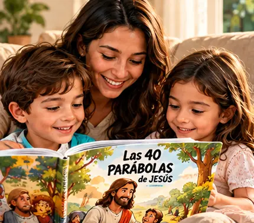
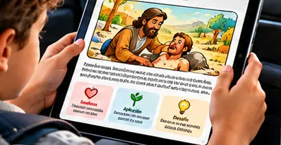
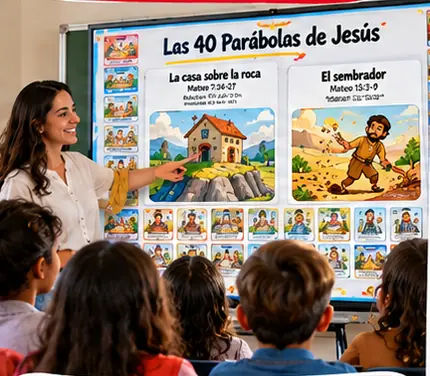
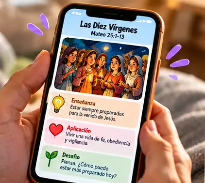
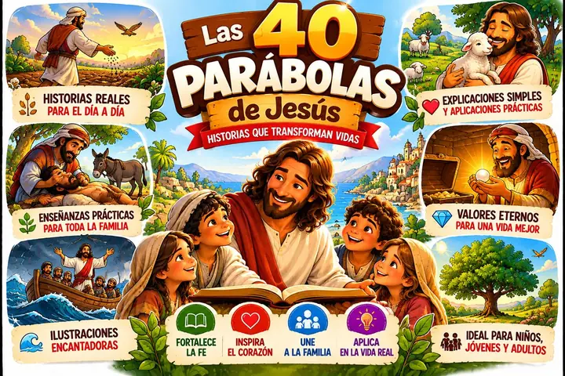

Convierte unos minutos del día en un momento de fe con tus hijos
Descubre 40 historias ilustradas de Jesús para leer, conversar y enseñar valores cristianos de una manera sencilla, visual y divertida.
Cada historia en una página, con su referencia bíblica.
Ilustraciones que captan la atención de los niños.
Una enseñanza y un desafío para aplicar en familia.
📖 40 historias • 🎨 Ilustradas • ❤️ Para compartir en familia
Únete a los padres que ya adquirieron Las 40 Parábolas de Jesús para ayudar a sus hijos.
¿Te identificas?
¿Quieres enseñarles a tus hijos sobre Jesús, pero no sabes por dónde empezar?
Es más común de lo que crees. Muchos padres sienten lo mismo:
“No tengo tiempo.”El día se va y la historia bíblica queda para mañana.
“No la entiendo bien.”La parábola parece sencilla, pero el mensaje no queda claro.
“¿Cómo se lo explico?”Quieres enseñarles, pero no sabes con qué palabras.
“Se distraen enseguida.”Un texto largo y sin imágenes no capta su atención.
“Lo olvidamos rápido.”Sin imágenes ni aplicación, la enseñanza se pierde.
“¿Dónde está en la Biblia?”Cuesta encontrar el libro, el capítulo y el versículo.
Por eso creamos una forma más sencilla de acercar las enseñanzas de Jesús a la vida familiar.
Cómo funciona
Una parábola puede convertirse en un momento especial en familia
Un método simple en 4 pasos: Lee → Entiende → Conversa → Aplica.
1 · LeeDescubre la historia.
2 · EntiendeComprende el mensaje de Jesús de una manera sencilla.
3 · ConversaHabla con tus hijos sobre lo que aprendieron.
4 · AplicaLleva esa enseñanza a una situación real de la vida.
40 parábolas. 40 oportunidades para acercarse a Jesús.
Por dentro
Así funciona cada parábola
Una estructura sencilla para que los niños conozcan la historia, entiendan su enseñanza y la lleven a la vida cotidiana.
1234567
1
📖 La historiaQué es la parábola, en palabras sencillas.
2
📍 Referencia bíblicaLibro, capítulo y versículo.
3
📜 Texto bíblicoLas palabras de Jesús en la página.
4
👥 PersonajesQuiénes son y qué representa cada uno.
5
🎨 Ilustraciones4 escenas que cuentan la enseñanza.
6
💡 SignificadoEl mensaje central de Jesús.
7
❤️ Aplicación · 🎯 DesafíoCómo vivirlo hoy y un reto práctico.
Vista previa
Hojea el material
Descubre algunas de las 40 historias que encontrarás dentro. Toca una página para verla completa.
Desliza para ver más →
El contenido
Las 40 parábolas que vas a recibir
40 historias. 40 enseñanzas. 40 oportunidades para conversar con tus hijos.
PARÁBOLA 14
La Paja y la Viga
Mateo 7:3-5 • Lucas 6:41-42
PARÁBOLA 15
El Árbol Bueno y el Árbol Malo
Mateo 7:15-20
Beneficios
No se trata solo de leer una historia
Se trata de crear pequeños momentos de fe que tus hijos puedan recordar.
❤️ Conexión
Crear momentos de conexión
Unos minutos juntos, sin prisa, alrededor de una historia.
📖 Biblia
Acercar a los niños a la Biblia
Las historias de Jesús pasan a ser parte de su rutina.
💬 Diálogo
Conversar sobre la fe
Cada parábola abre una conversación con tus hijos.
🌱 Valores
Enseñar valores cristianos
Con ejemplos que los niños entienden y recuerdan.
👨👩👧👦 Familia
Tiempo de calidad en familia
Un momento para compartir, lejos de las prisas del día.
🎯 Acción
Aprender con pequeñas acciones
Cada desafío convierte la enseñanza en algo práctico.
Porque enseñar a nuestros hijos sobre Jesús no tiene que ser complicado.
Para quién es
Creado especialmente para familias que quieren enseñar a sus hijos sobre Jesús
👨👩👧 Padres
Para enseñar en casa
Para crear momentos de fe y conversación con tus hijos.
❤️ Familias
Para aprender juntos
Para leer, conversar y reflexionar juntos.
⛪ Escuela dominical
Para enseñar las parábolas
Un recurso visual para clases y grupos infantiles.
🙌 Líderes infantiles
Para acompañar a los niños
Historias claras, con aplicación y desafío listos para usar.
Cómo usarlo
Unos minutos, en cualquier momento
No necesitas preparar nada. Abre una parábola y empiecen.
🏠 En casaMomentos en familia

Después de la cena, antes de dormir o en un momento tranquilo.
🚗 En momentos de esperaAprovecha el tiempo

Una manera sencilla de aprovechar pequeños momentos.
⛪ En la iglesiaMaterial para enseñar

Un recurso para clases y grupos infantiles.
👨👩👧👦 En familiaSiempre a tu alcance

Lean una parábola, conversen y descubran juntos su enseñanza.
Un momento cotidiano puede convertirse en un momento de fe.
Tu acceso
Todo lo que necesitas para acercar las enseñanzas de Jesús a tus hijos
40 parábolas de JesúsCada una con enseñanza, aplicación y desafío
Referencias bíblicasLibro, capítulo y versículo de cada historia

Historias ilustradas4 escenas a color por parábola
Material digital ilustradoEn el celular, la tablet o impreso en A4
📖 LeerLa historia
+
💬 ConversarEn familia
+
🎲 JugarCon los bonos
+
❤️ AplicarEn la vida
=
Más que un material para leerUna herramienta para crear momentos de fe en familia
Bonos · Experiencia Familiar Completa
Haz que las parábolas cobren vida
Además del material principal, puedes llevar recursos para jugar, repasar y aprender juntos.
🎲 Juego de mesa: una forma divertida de repasar las enseñanzas de las 40 parábolas mientras la familia juega.
40 casasDel inicio a la llegada
9 tipos de casaLee, responde, comparte, ayuda…
Toda la familiaNiños y adultos juegan juntos
Bono 2
🃏 Cartas de las 40 Parábolas
Una carta para cada parábola para recordar, conversar y aprender.
El SembradorMateo 13:3-905
La Casa sobre la RocaMateo 7:24-2701
El Buen PastorJuan 10:1-1823
El Tesoro EscondidoMateo 13:4435
El Grano de MostazaMateo 13:31-3208
Testimonios
Lo que dicen las familias que ya comenzaron esta aventura
Gabriela Xavier
Clienta
★★★★★
¡Me encantaron las parábolas! El material es muy lindo y fácil de aplicar. Mi hija lo entendió todo muy bien.
Ana Luiza
Clienta
★★★★★
No tengo palabras para describir este material. Simplemente increíble.
Caio Taumaturgo
Cliente
★★★★★
Estoy seguro de que fue la mejor inversión que he hecho en la vida de mi hijo.
Oferta especial
Elige cómo empezar
Pago único. Acceso inmediato al material digital.
Las 40 Parábolas de JesúsLa opción esencial
Las 40 Parábolas de Jesús: 40 historias ilustradas
Texto y referencia bíblica de cada parábola
Personajes, significado, aplicación y desafío para hoy
Léelo en el celular, tablet o computadora
Formato A4 para imprimir y usar en familia
Acceso inmediato después del pago
Bono 1: Juego de mesa (no incluido)
Bono 2: Cartas (no incluidas)
De por soloUS$9,90Pago único
⭐ Recomendada
Las 40 Parábolas + Juego de Mesa + Cartas
Experiencia Familiar CompletaPara leer, conversar, jugar y aprender en familia.
El Buen Pastor
+ 2 BONOS
Las 40 Parábolas de Jesús: 40 historias ilustradas
Texto y referencia bíblica de cada parábola
Personajes, significado, aplicación y desafío para hoy
Léelo en el celular, tablet o computadora
Formato A4 para imprimir y usar en familia
Bono 1: Juego de mesa «Las 40 Parábolas de Jesús»
Bono 2: Cartas de las 40 Parábolas
Acceso inmediato después del pago
De por soloUS$19,90Pago único · Por solo US$10 más, llevas los recursos adicionales para jugar, repasar y aprender en familia.
Compra protegidaGarantía de 7 díasAcceso inmediato
Pago seguroAcceso inmediatoGarantía de 7 días
Compra con tranquilidad
Tienes 7 días para conocer el material y decidir si es adecuado para tu familia. Si no lo es, pides el reembolso dentro de ese plazo.
Dudas
Antes de decidir, lee esto
Las preguntas que más se hacen los padres antes de comprar.
¿Para qué edad es?+
Para niños de aproximadamente 4 a 12 años, junto con sus padres. Con los más pequeños, lees tú y explicas con las ilustraciones; los más grandes pueden leerlo solos.
¿Es un producto físico o digital?+
Es 100% digital (PDF). No se envía nada por correo postal.
¿Cómo recibo el material?+
Después de confirmar el pago, recibes el acceso en el correo que registraste en la compra.
¿Cuándo recibo el acceso?+
Inmediatamente después de que se confirma el pago.
¿Puedo imprimirlo?+
Sí. Las páginas están en formato A4 horizontal, listas para imprimir y usar en casa.
¿Necesito tener conocimientos de la Biblia?+
No. Cada página ya trae la historia, el texto bíblico, los personajes, el significado y cómo aplicarlo.
¿Qué incluye la Experiencia Familiar Completa?+
Las 40 Parábolas de Jesús + Bono 1: juego de mesa + Bono 2: cartas de las 40 parábolas, por US$ 19,90 en un pago único.
¿Existe garantía?+
Sí. Tienes 7 días para conocer el material. Si no es adecuado para tu familia, pides el reembolso dentro de ese plazo.
¿Ya resolviste tus dudas?
Empieza hoy a crear momentos de fe que tus hijos puedan recordar
Descubre las 40 Parábolas de Jesús y conviértelas en momentos de aprendizaje, conversación y conexión en familia.